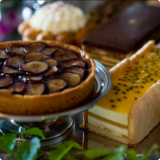

フランス料理と日本料理の融合を目指して…
フランス、スイスと数々の3つ星レストランで修業を重ねたシェフが繰り広げる料理のコンセプトは、食材の融合。
すなわち美味しい食材に”国境”をつくらないこと。日本とフランスの料理を融合させた独自のコロニアルスタイルです。
フランスの食材もふんだんに使えば、フレンチではタブーとされる醤油がゼリーになって登場する…
100年の時を経て、さらなるフランスと日本の融合をその目で確かめて下さい。
建物について
”横濱”に構える、歴史あふれる建物。
大航海時代以降、世界中に進出して行ったヨーロッパ人にとって、
アジアの日差しは非常に強く感じられるものでした。
そんな異国で心地よく過ごすために考え出された建築様式
それが”コロニアルスタイル”。


真っ白な建物にベランダを廻らし、
風通しが良くなるように工夫された住居は、
アジアとヨーロッパ人のスタイルが融合したものといえるでしょう。
都会に現れる、白い壁に大きなテラスをもった建物、
そして屋根には 日本瓦…
明治41(1908)年に建てられた歴史ある建物です。
※コロニアルスタイル
17~18世紀にイギリス・スペイン・オランダなどの植民地に発達した建築・工芸の様式。
本国の様式を模倣し、植民地向けの実用性を加味したもの。
様々なご利用方法
･〜･ for ･〜･
BUSINESS
･〜･〜･〜･〜･
重要なお客様をお招きする際に
ご利用いただきたいと思います。
･〜･ for ･〜･
DINNER
･〜･〜･〜･〜･
結婚記念日を初め、様々な記念日ごとにご利用いただきたいと思います。（オリジナルプランも承ります）
･〜･ for ･〜･
BRIDAL
･〜･〜･〜･〜･
結婚式や結納のの際にご利用いただきたいと思います。
･〜･ for ･〜･
BIRTHDAY
･〜･〜･〜･〜･
誕生日の他にも、
還暦・入学・就職などの様々な家族でのお祝い事に利用いただきたいと思います。
･〜･ for ･〜･
PARTY
･〜･〜･〜･〜･
貸切パーティーや展示会などでのご利用もしていただけます。
メニュー

ウェディング

La Baie ✕ ウェディング
La Baieでは、検討される方々一人一人にあった結婚式をプランニングし、ご満足の行くような品質・お値段で、他にはない素敵な結婚式をご提供します。
写真撮影や特注ケーキはもちろんのこと、あなたの思い描くような結婚式を、私達と一緒に挙げましょう。
店舗案内

ランチ：11:30~14:30 ディナー：17:30~21:00
月曜定休（月曜が祝日の場合は火曜）
〒160-0023 神奈川県横浜市西区みなとみらいXX-X
駐車場10台あり・地下鉄○○線○○駅徒歩X分
☎ 078-262-6650 / la_baie@example.com
ご予約はこちらから承っております。
La Baie | Official BLOG
2019・04・13
横浜山手より
2019・04・11
ラベシェフ日記。No01
2019・04・07
春のメニュー。
MD31 Grid Layout / IW13A175-18 / © Yuta Nakane.